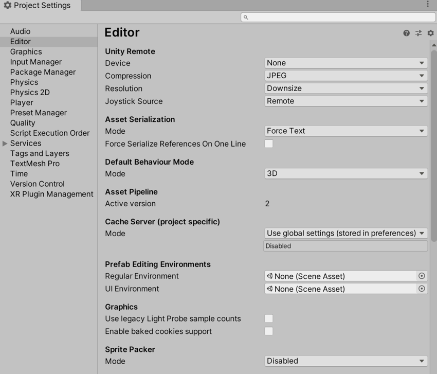
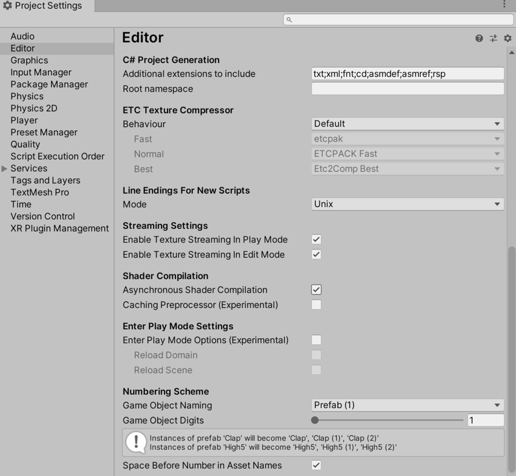

Use the Editor settings (main menu: Edit > Project Settings, the select the Editor category) to apply global settings for working in Unity’s Editor.
 
| Property | Function | |
|---|---|---|
|
Unity Remote Note: Unity Remote is deprecated in 2020.1 and future versions. To test your app on mobile devices, use the Device Simulator package instead. |
||
| Device | Choose the device type you want to use for Unity Remote testing. Unity RemoteA downloadable app designed to help with Android, iOS and tvOS development. The app connects with Unity while you are running your project in Play Mode from the Unity Editor. More info See in Glossary is a downloadable app designed to help with Android, iOS and tvOS development. |
|
| CompressionA method of storing data that reduces the amount of storage space it requires. See Texture Compression, Animation Compression, Audio Compression, Build Compression. See in Glossary |
Choose the type of image compression to use when transmitting the game screen to the device via Unity Remote. Default is JPEG. | |
| JPEG | JPEG usually gives higher compression and performance, but the graphics quality is a little lower. This is the default option. | |
| PNG | PNG gives a more accurate representation of the game display, but can result in lower performance. | |
| Resolution | Choose the resolution the game should run at on Unity Remote. Default is Downsize. | |
| Downsize | Display the game at a lower resolution. This results in better performance, but lower graphical accuracy. This is the default option. | |
| Normal | Display the game at normal resolution. This results in better graphical accuracy, but lower performance. | |
| Joystick Source | Choose the connection source for the joysticks you are using. Default is Remote. | |
| Remote | Use joysticks that are connected to a device running Unity Remote. This is the default option. | |
| Local | Use joysticks that are connected to the computer running the Editor. | |
| Version ControlA system for managing file changes. You can use Unity in conjunction with most common version control tools, including Perforce, Git, Mercurial and PlasticSCM. More info See in Glossary |
||
| Mode | Choose the visibility of meta files. You can use Unity in conjunction with most common version control tools, including Perforce and PlasticSCM. Default is Hidden Meta Files. For more information on showing or hiding meta files, see Visible or hidden meta files at Unity Answers. |
|
| Hidden Meta Files | Hide meta files. This is the default option. | |
| Visible Meta Files | Display meta files. This is useful when using version control, because it allows other users and machines to view these meta files. | |
| PerforceA version control system for file change management. More info See in Glossary |
Use Perforce version control system. | |
| PlasticSCM | Use PlasticSCM version control system. | |
| Asset Serialization | ||
| Mode | Choose which format to use for storing serialized Assets. This is set to Force Text by default. Unity uses serialization to load and save Assets and AssetBundles to and from your computer’s hard drive. To help with version control merges, Unity can store Scene files in a text-based format. If you are not merging Scenes, Unity can store Scenes in a more space-efficient binary format, or allow both text and binary Scene files to exist at the same time. |
|
| Mixed | Assets in Binary mode remain in Binary mode, and Assets in Text mode remain in Text mode. Unity uses Binary mode by default for new Assets. | |
| Force Binary | Convert all Assets to Binary mode, including new Assets. | |
| Force Text | Convert all Assets to Text mode, including new Assets. This is the default option. | |
| Serialize Inline Mappings On One Line | Enable this setting to make Unity write references and inline mappings on one line. If this setting is disabled, Unity splits text serialized references over multiple lines when the total characters in a line reach over 80 characters. | |
| Default Behavior Mode | ||
| Mode | Choose the default 2D or 3D development mode. Unity sets up the certain default behaviors according to the mode you choose to make development easier. Default is 3D. | |
| 3D | Set Unity up for 3D development. This is the default option. | |
| 2D | Set Unity up for 2D development. | |
| Asset Pipeline | ||
| Mode | Choose which Asset Pipeline version to use. | |
| Version 1 (deprecated) | Use Asset Pipeline version 1. This feature is deprecated and is no longer supported. | |
| Version 2 | Use Asset Pipeline version 2. This is the default option. | |
| Active version | Displays the active Asset Pipeline version. For a change to take effect, you must save and restart the project. | |
| Cache Server (project specific) | ||
| Mode | Choose which Cache Server to use. | |
| Use global settings (stored in preferences) | The default Cache Server set in the Preferences window is used. | |
| Enabled | Choose a specific Cache Server to use instead of the default. | |
| Disabled | No Cache Server is used. | |
| PrefabAn asset type that allows you to store a GameObject complete with components and properties. The prefab acts as a template from which you can create new object instances in the scene. More info See in Glossary Editing Environments |
||
| Regular Environment | Assign a Scene as an editing environment in Prefab Mode for regular Prefabs (that is, Prefabs with a regular Transform component). This allows you to edit your Prefab against a backdrop of your choosing rather than an empty Scene. See Editing a Prefab in Prefab Mode for more information. |
|
| UI Environment | Assign a Scene as an editing environment in Prefab Mode for UI Prefabs (that is, Prefabs with a Rect Transform component). This allows you to edit your Prefab against a backdrop of your choosing rather than an empty Scene. See Editing a Prefab in Prefab Mode for more information. |
|
| Graphics | ||
| Show lightmap resolution overlay | This setting relates to Draw Modes in the Baked Global Illumination category. When this is enabled, Unity draws a checkerboard overlay on top of these Draw Modes, where each checker tile corresponds to one texel. Use this to check the texel density of your Scene when lightmapping. You can also toggle this setting from the Draw Mode drop-down menu, when the active Draw Mode is from the Baked Global Illumination category. |
|
| Use legacy Light ProbeLight probes store information about how light passes through space in your scene. A collection of light probes arranged within a given space can improve lighting on moving objects and static LOD scenery within that space. More info See in Glossary sample counts |
Uses fixed Light Probe sample counts for baking with the Progressive LightmapperA tool in Unity that bakes lightmaps according to the arrangement of lights and geometry in your scene. More info See in Glossary. The sample counts are: 64 direct samples, 2048 indirect samples, and 2048 environment samples. |
|
| Enable baked cookies support | For Projects created in Unity 2020.1 or above, baked cookies are enabled for Baked Lights and Mixed Lights in the Progressive Lightmapper by default. For Projects created in versions of Unity prior to 2020.1, baked cookies are disabled for Baked Lights and Mixed Lights in the Progressive Lightmapper by default. This is to provide backwards compatibility. Enable this to enable baked cookies for Baked Lights and Mixed Lights in the Progressive Lightmapper. For more information, see Cookies. |
|
| SpriteA 2D graphic objects. If you are used to working in 3D, Sprites are essentially just standard textures but there are special techniques for combining and managing sprite textures for efficiency and convenience during development. More info See in Glossary Packer |
||
| Mode | Choose a mode to configure the Sprite PackerA facility that packs graphics from several sprite textures tightly together within a single texture known as an atlas. Unity provides a Sprite Packer utility to automate the process of generating atlases from the individual sprite textures. More info See in Glossary tool. The Sprite Packer tool automates the process of generating Sprite Atlases from individual Sprite Textures. This setting is set to Disabled by default. |
|
| Disabled | Unity does not pack Sprite Atlases. This is the default setting. | |
| Sprite AtlasA texture that is composed of several smaller textures. Also referred to as a texture atlas, image sprite, sprite sheet or packed texture. More info See in Glossary V1 - Enabled For Builds |
Unity packs Sprite Atlases for builds only. | |
| Sprite Atlas V1 - Always Enabled | Unity packs Sprite Atlases for builds and before entering Play mode. | |
| Sprite Atlas V2 (Experimental) - Enabled | Unity packs Sprite Atlases for both builds and before entering Play mode. | |
| Sprite Atlas V2 (Experimental) - Enabled For Builds | Unity packs Sprite Atlases for builds only. | |
| C# Project Generation | ||
| Additional extensions to include | Include a list of additional file types to add to the C# Project. Separate each file type with a semicolon. By default, this field contains txt;xml;fnt;cd. |
|
| Root namespace | Fill in the namespace to use for the C# project RootNamespace property. See Common MSBuild Project Properties for more information. This field is blank by default. |
|
| ETC Texture Compressor | ||
| Behavior | Specify the compression tool to use for different compression qualities of ETC Textures. The compression tools available are etcpak, ETCPACK and Etc2Comp. These are all third-party compressor libraries. |
|
| Legacy | Use the configuration that was available before ETC Texture compression became configurable. This sets the following properties: - Fast: ETCPACK Fast - Normal: ETCPACK Fast - Best: ETCPACK Best |
|
| Default | Use the default configuration for Unity. This sets the following properties: - Fast: etcpack - Normal: ETCPACK Fast - Best: Etc2Comp Best |
|
| Custom | Customize the ETC Texture compression3D Graphics hardware requires Textures to be compressed in specialized formats which are optimized for fast Texture sampling. More info See in Glossary configuration. When you choose this option, the Fast, Normal, and Best properties are enabled. This maps to the Compressor Quality setting in the Texture Importer for the supported platforms. |
|
| Fast | Define the compression quality tool to use for Fast compression. | |
| Normal | Define the compression quality tool to use for Normal compression. | |
| Best | Define the compression quality tool to use for Best compression. | |
| Line Endings For New ScriptsA piece of code that allows you to create your own Components, trigger game events, modify Component properties over time and respond to user input in any way you like. More info See in Glossary |
||
| Mode | Choose the file line endings to apply to new scripts created within the Editor. Note that configuring these settings does not convert existing scripts. | |
| OS Native | Apply line endings based on the operating system the Editor is running on. | |
| Unix | Apply line endings based on the Unix operating system. | |
| Windows | Apply line endings based on the Windows operating system. | |
| Streaming Settings | ||
| Enable Texture Streaming in Play Mode | Enable Mipmap Streaming in Play Mode. The Quality Texture Streaming setting must also be enabled. |
|
| ShaderA program that runs on the GPU. More info See in Glossary Compilation |
||
| Asynchronous Shader Compilation | Enable this checkbox to make Unity compile shaders in the background. While compiling, the Unity engine uses a dummy Shader to render geometry in the Editor. When Shader compilation has finished, the engine swaps your Shader Variant back in. This means the Editor runs seamlessly, without having to wait for the Unity engine to compile every single Shader variant before rendering. For more information, see Asynchronous Shader compilation. | |
| Numbering Scheme | ||
| Game Object Naming | Naming scheme for duplicated GameObjectsThe fundamental object in Unity scenes, which can represent characters, props, scenery, cameras, waypoints, and more. A GameObject’s functionality is defined by the Components attached to it. More info See in Glossary. Duplicated or instantiated GameObjects are named by appending successive numbers to the original object name. |
|
| Game Object Digits | Sets the amount of digits to use for duplicated GameObject numbers. | |
| Space Before Number in Asset Names | Controls whether to insert a space before a number in duplicated Asset names. | |
EditorManager